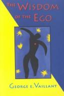

The Wisdom of the Ego
Book·George E. Vaillant, 1993·自我的智慧

Based on long-term follow-up, Vaillant arranges defense mechanisms in a hierarchy according to their maturity.
- Author
- George E. Vaillant
- Year
- 1993
- Difficulty
- Intermediate
- Kind
- Primary text
- Schools
- Ego Psychology
- Core theories
- Hierarchy of Defenses
Editions
- Chinese edition 《自我的智慧》 [美] 乔治•范伦特 / George Vaillant · tr. 张 洁 / 宋欣欣 / 童 俊 · 世界图书出版公司 · 2016 Douban 7.9 (142 ratings) Douban page ↗
- English edition The Wisdom of the Ego George E. Vaillant · Harvard University Press, first edition · 1993 Open Library ↗